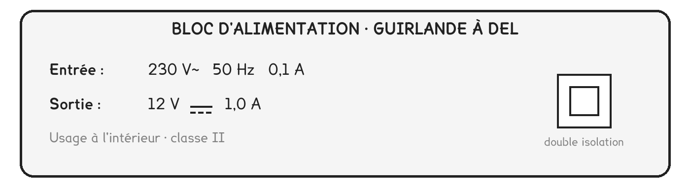
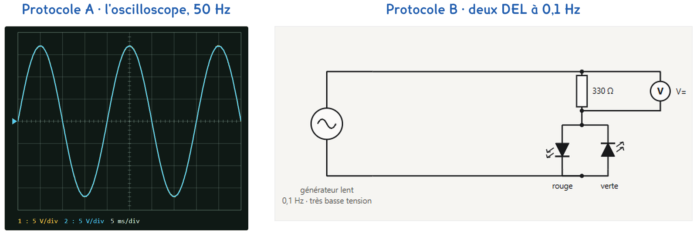
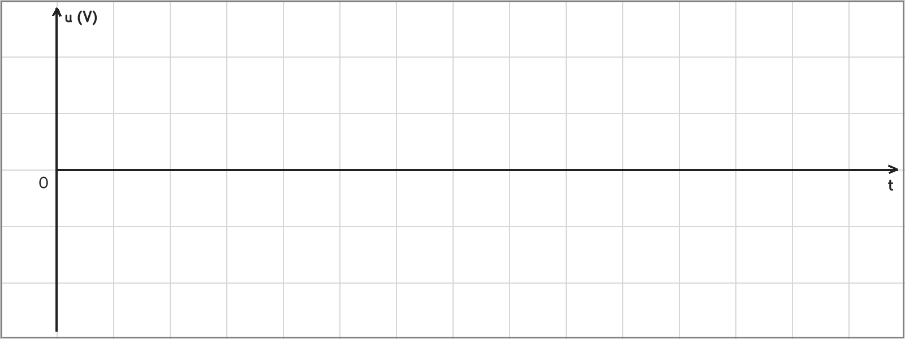

Tle Bac Pro · MMCM, MVTR, MELEC, CIEL · TP sur simulation SIM-07
Comment des diodes et un condensateur rendent-ils continue une tension alternative ?
3 figures
Sujet. Une guirlande à DEL, une box, un chargeur de téléphone fonctionnent en courant continu, alors que la prise délivre du 230 V alternatif. Dans leur bloc d’alimentation, un transformateur abaisse la tension, puis des diodes et un condensateur la rendent continue.
Problématique : comment des diodes et un condensateur rendent-ils continue une tension alternative ?
La simulation. Ouvrir « Redresser un courant » : le fichier redressement.html, sur l’ENT ou la clé du professeur.
Voici la plaque du bloc d’alimentation d’une guirlande à DEL.

a) Relever les deux tensions de la plaque et dire leur nature.
| La tension | Alternative ou continue ? | Le symbole qui le dit | |
|---|---|---|---|
| Entrée | ……………… | ……………………… | ……………… |
| Sortie | ……………… | ……………………… | ……………… |
Le transformateur de la simulation délivre 12 V efficaces à 50 Hz. On rappelle que Umax = Ueff × √2 et que T = 1 ÷ f.
b) Calculer la tension maximale du transformateur et sa période.
Umax = ……………………………… · T = ……………………………… s = ……………………… ms
Deux protocoles répondent à la même question. Une partie de la classe prend A, l’autre prend B, et on compare à la fin.

Capture de la simulation « Redresser un courant », montage sans diode.
Protocole A · l’oscilloscope. À 50 Hz, tout va trop vite pour l’œil. L’oscilloscope dessine la tension du transformateur, voie 1, et celle de la charge, voie 2 : on y lit une forme, une valeur maximale, une période. Un voltmètre en position continu donne la valeur moyenne.
Protocole B · deux DEL à 0,1 Hz. Le générateur ralenti fait une période en 10 s. Deux DEL montées tête-bêche montrent le sens du courant dans la charge : la rouge dans un sens, la verte dans l’autre. Le voltmètre suit la tension seconde après seconde.
c) Compléter le tableau pour comparer les deux protocoles.
| Protocole A | Protocole B | |
|---|---|---|
| Ce qu’on lit | …………………………… | …………………………… |
| Le sens du courant se voit | par une DEL · par le signe de la tension | par une DEL · par le signe de la tension |
| Une limite | …………………………… | …………………………… |
Le choix se fait maintenant, avant de toucher aux réglages.
d) Quel protocole prenez-vous ? Justifier en une phrase.
Je prends le protocole ……… parce que ……………………………………………………………………
e) Prévoir : pendant quelle part de la période le courant passe-t-il ?
Entourer une réponse par montage.
| Une diode | jamais | la moitié du temps | tout le temps |
| Le pont de quatre diodes | jamais | la moitié du temps | tout le temps |
Avant de commencer. Ouvrir redressement.html. Charge R : 220 Ω, Condensateur : Sans. Protocole A : 5 V/div et 5 ms/div. Protocole B : fréquence du générateur 0,1 Hz.
Le schéma d’abord, les mesures ensuite.
f) Schématiser le montage en pont, puis flécher le courant dans R.
Le schéma se dessine sur la feuille du TP.
Le tableau suivant est commun aux deux protocoles.
g) Compléter le tableau pour les trois montages.
Une ligne par montage ; la dernière colonne est pour le protocole A.
| Le montage | Change de sens dans R | Il passe pendant | Voltmètre continu (V) | Sommet de uR (V) |
|---|---|---|---|---|
| Sans diode | oui · non | ……………… | ……………… | ……………… |
| Une diode | oui · non | ……………… | ……………… | ……………… |
| Pont de quatre diodes | oui · non | ……………… | ……………… | ……………… |
Avec le pont, comparer le rythme de uR à celui de la source.
h) Relever les deux périodes, avec leur unité.
| Période de la source | Période de uR avec le pont |
|---|---|
| ……………………… | ……………………… |
Puis la forme de la tension, sur le quadrillage.
i) Tracer l’allure de uR avec le pont, sur deux périodes. Graduer les axes.

Le condensateur se règle dans le protocole A : tout le monde y passe pour la dernière mesure.
j) Compléter le tableau du filtrage.
| Le condensateur | 100 µF | 470 µF | 2 200 µF |
|---|---|---|---|
| Ondulation ΔU (V) | |||
| Voltmètre, position continu (V) |
Comparer d’abord avec un groupe qui a pris l’autre protocole.
k) La prévision e est-elle confirmée ? L’autre groupe est-il d’accord ?
Avec le pont, le sommet de uR est plus bas que sans diode : le courant traverse deux diodes à la fois. Les groupes B prennent les valeurs d’un groupe A.
l) Calculer la chute de tension dans le pont, puis dans une diode.
Chute dans le pont : ……………………… V · chute dans une diode : ……………………… V
m) Quel est l’effet du condensateur ? La tension est-elle continue ?
La simulation simplifie le montage : son repli « Ce que la simulation simplifie » le dit.
n) Au labo, avec un vrai transformateur, qu’est-ce qui changerait ?
o) Répondre à la problématique en deux ou trois phrases.
Ce que ce TP a établi, et qui vaut pour tout bloc d’alimentation :
À RETENIR
Une diode ne laisse passer le courant que dans un sens. Seule, elle supprime une alternance sur deux. C’est le redressement simple alternance.
Un pont de quatre diodes fait passer le courant dans la charge toujours dans le même sens. C’est le redressement double alternance, et sa tension a une fréquence double.
Chaque diode qui conduit fait perdre environ 0,6 à 0,7 V.
Un condensateur en parallèle sur la charge filtre la tension redressée. Plus sa capacité est grande, plus l’ondulation est petite, et la tension devient presque continue.
TP sur simulation de physique-chimie. Le travail se fait sur la feuille du TP : cette page en est la version à l'écran, sans les lignes à remplir. Rien n'est enregistré.